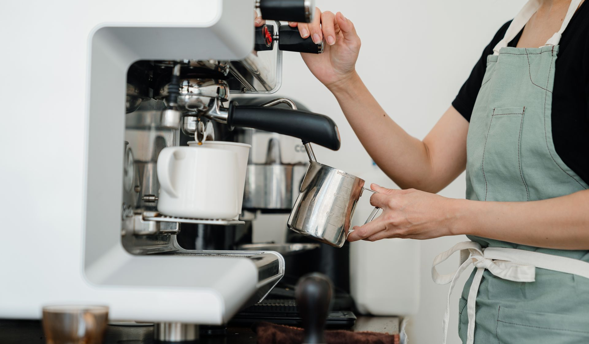
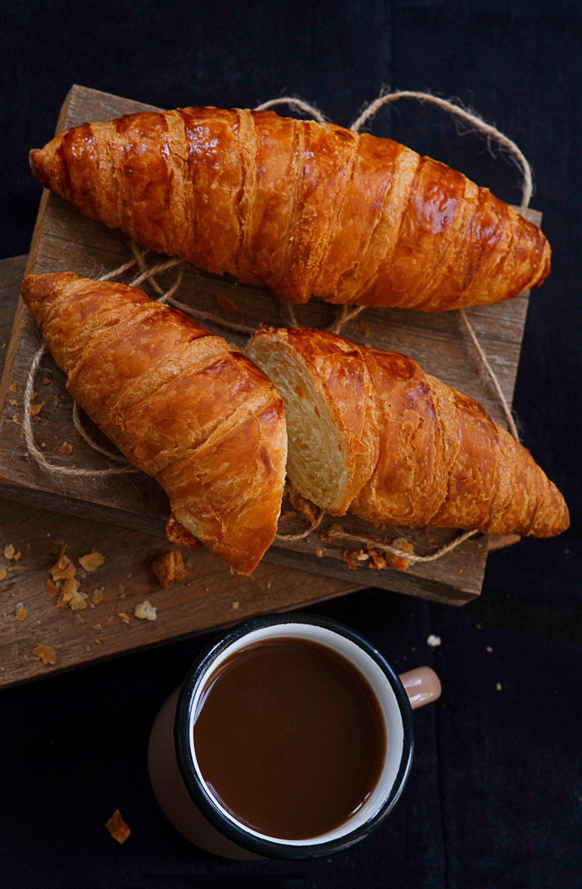

Cafe Harmonic — specialty coffee, fresh bakes and the WriteOnCup experience, in the heart of Budapest.
Cafe Harmonic — specialty kávé, friss péksütemény és a WriteOnCup élmény, Budapest szívében.

Egy hangulatos kávézó Budapest szívében.
We roast, brew, and pour with care — a quiet corner for locals and travelers alike to slow down for a moment.
Gondosan pörkölünk és főzünk — egy nyugodt sarok, ahol helyiek és utazók is megállhatnak egy pillanatra.
Kávé és még valami jó.
Fresh croissants, pastries and cakes, baked every morning to go with your coffee.
Friss croissant, sütemény és torta, minden reggel frissen sütve a kávéd mellé.
Everything is made with care, so it always feels like a little extra treat.
Minden gondosan készül, hogy mindig egy kis plusz élmény legyen.

Illusztráció — a végleges, egyedi WriteOnCup fotó és matrica-grafika elkészültéig.
Írj egy pozitív üzenetet. Mi pedig eljuttatjuk valaki másnak.
Write a short, kind message on a sticker — it might end up on a stranger's cup, brightening their day.
Írj egy rövid, kedves üzenetet egy matricára — lehet, hogy egy idegen poharára kerül, és felderíti a napját.


Kávé Budapest szívében.
Easy to find, easy to love — just a short walk from the city's best-known corners.
Könnyen megtalálható, könnyen megszerethető — pár lépésre a város ismert pontjaitól.
Gyere, köszönj be!
| Mon – Fri | 7:30 – 18:00 |
| Saturday | 8:00 – 19:00 |
| Sunday | 9:00 – 17:00 |
Jó kávé. Jó gondolatok. Találkozzunk a Cafe Harmonicban.